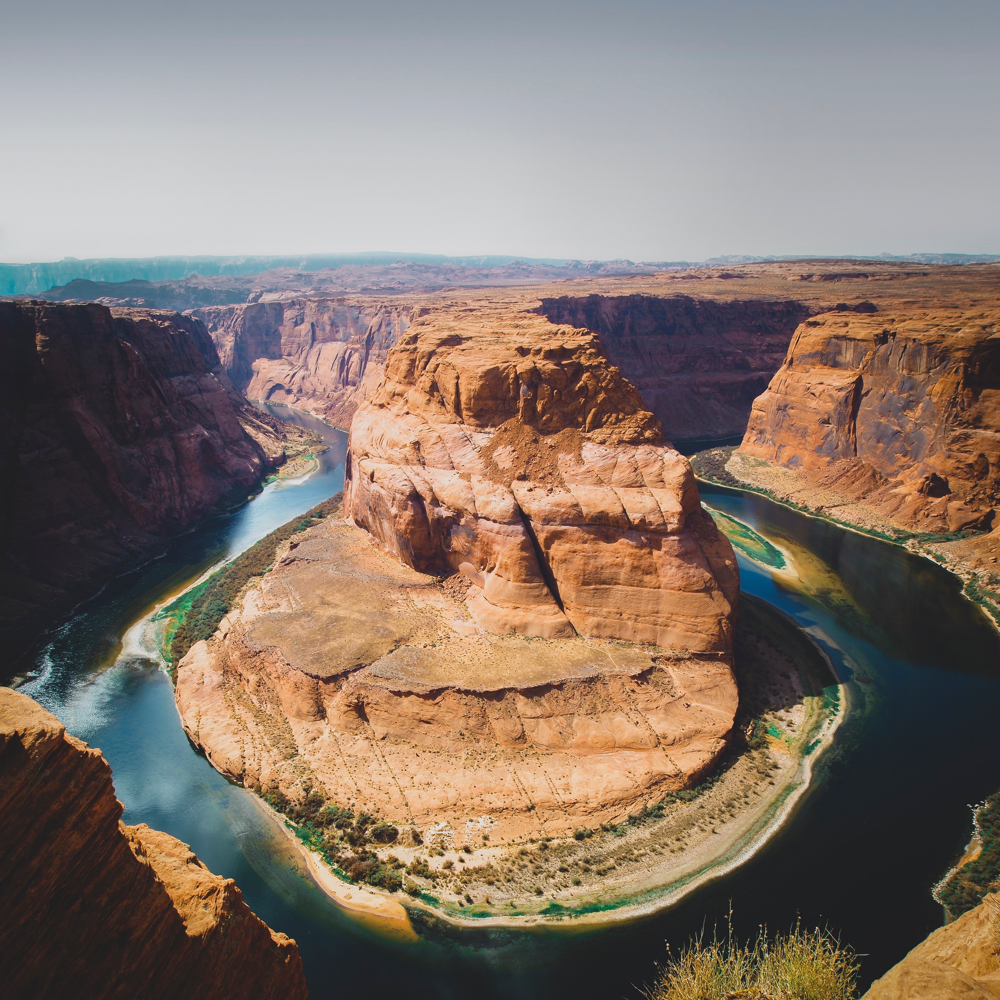

Nomad waterway, Box Vally Arizona

A relaxing journey that will take you all over the Box Vally.
Nomad water traverses through the whole of the Box Vally, taking you to see each of our
most famous attractions and even more valleys, canyons, and rivers. Be sure to take a camera to capture the breathtaking
views available here at Nomad waterway.
Want to learn more?...
More pictures